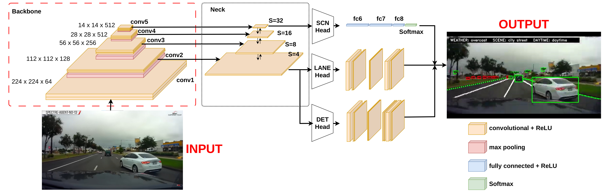
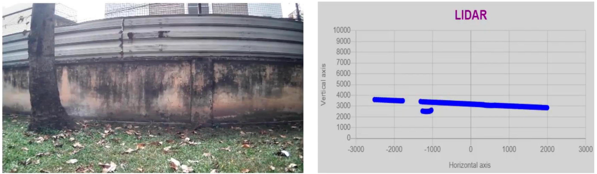
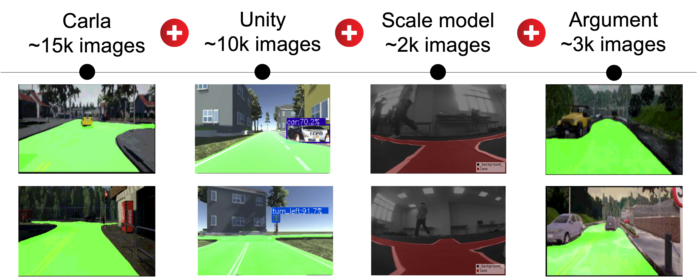
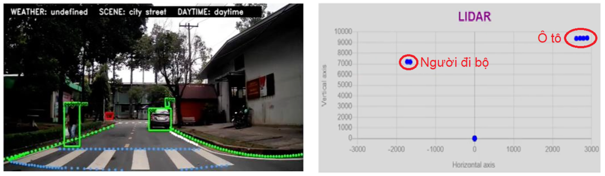
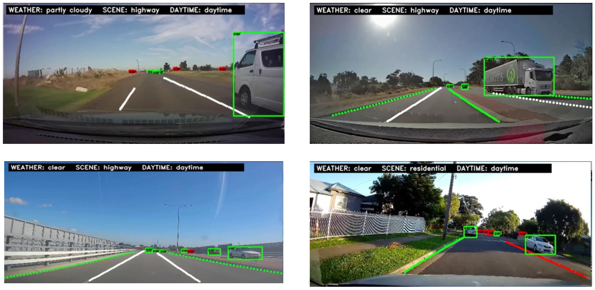
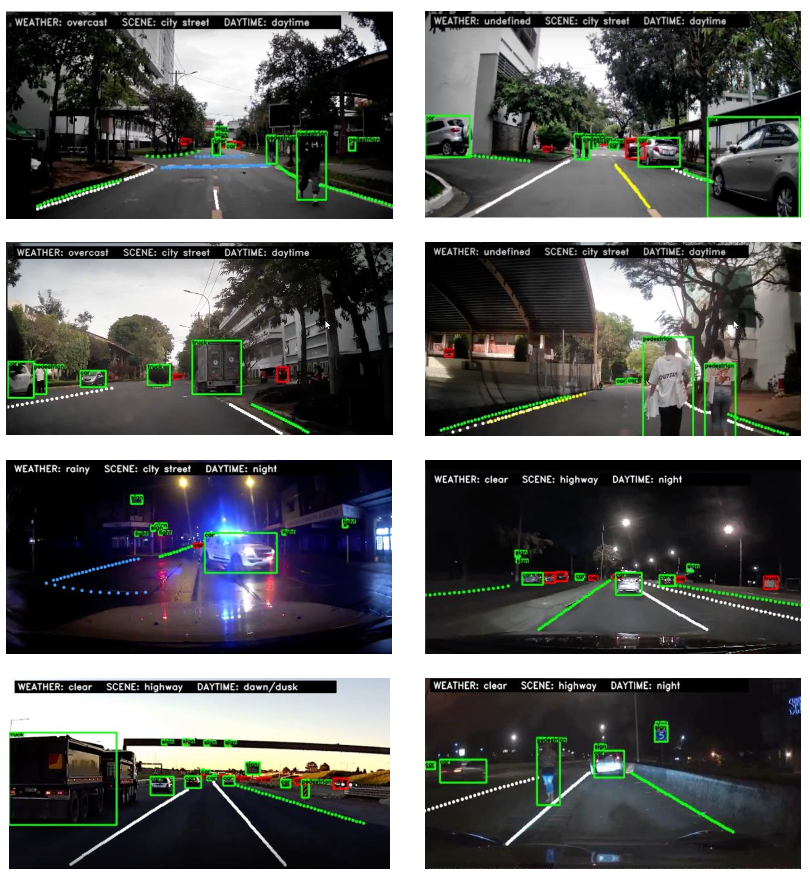
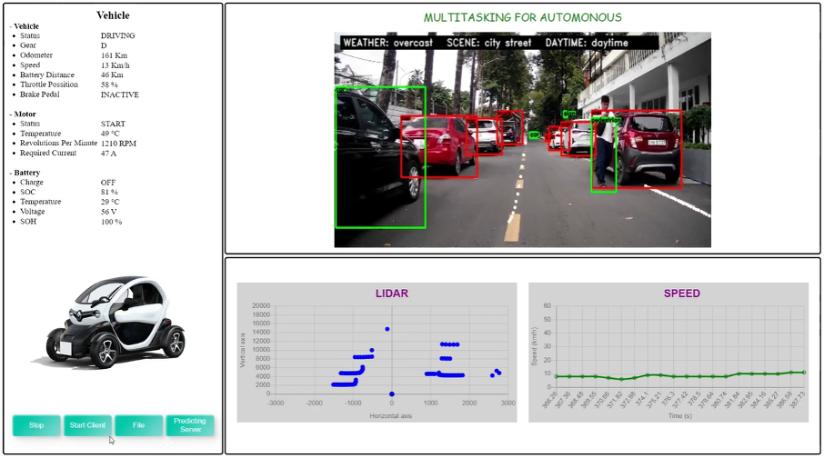
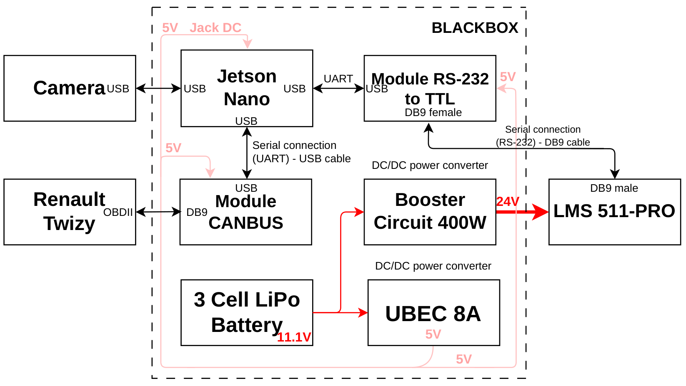
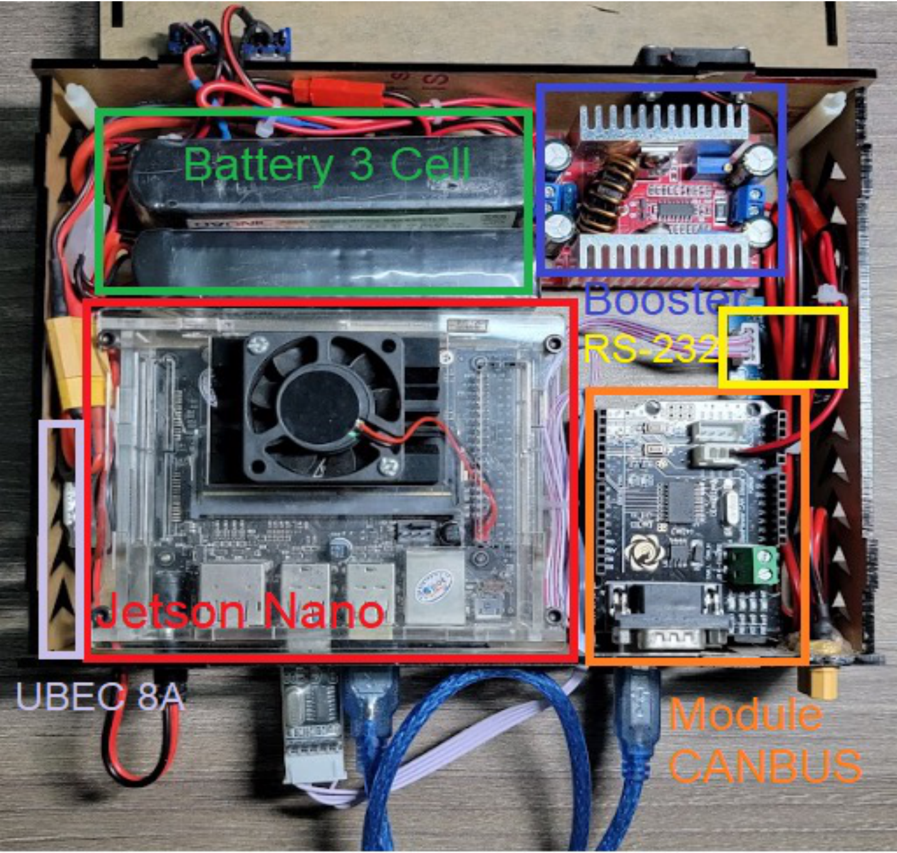
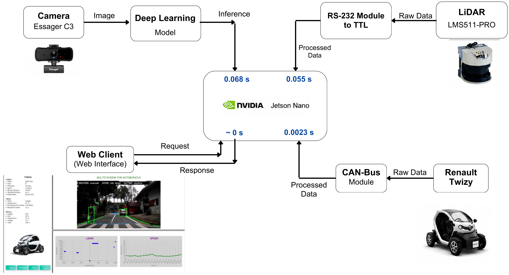

📝 Abstract
Real-time perception is essential for autonomous driving, yet deploying accurate deep learning models on resource-constrained edge devices remains challenging. Existing systems often employ separate single-task networks, which require substantial computational and memory resources. Moreover, vision-only perception can become unreliable under adverse illumination and weather conditions. This paper proposes an edge-based multi-task system that concurrently processes three complementary modalities: (1) external-visual perception, where a lightweight MobileNetV2 backbone with a BiFPN neck jointly performs object detection, lane detection, and driving-context classification; (2) spatial-environmental perception, where a 2D LiDAR provides obstacle-distance measurements to complement visual object detection; and (3) internal-vehicle perception, where the CAN bus provides real-time vehicle states such as speed and battery level. The multi-task visual model is validated in a Unity simulation and on a scale-model vehicle, then the complete tri-modal system is deployed on a real-world electric car (Renault Twizy) using an NVIDIA Jetson Nano. The multi-task visual network achieves 88.1% mAP@0.5 for object detection and 95.0% IoU for lane detection at 14.63 FPS using FP16 TensorRT inference, while the LiDAR and CAN bus pipelines run at approximately 55 ms and 2.3 ms per cycle.
📘 Method
The system performs three complementary forms of perception concurrently on an NVIDIA Jetson Nano: an external-visual branch from the camera, a spatial-environmental branch from the 2D LiDAR, and an internal-vehicle branch from the CAN bus. The overview at the top of this page shows how the three pipelines connect; each is detailed below.
🏗️ External-Visual Perception
A shared MobileNetV2 backbone extracts multi-scale features for BiFPN fusion. The stride-4 feature supports object detection (instance level) and lane-point estimation (structural level), whereas the stride-32 feature supports weather, road-scene, and time-of-day classification (contextual level). Sharing this hierarchy across tasks eliminates repeated feature extraction and keeps inference fast enough for real-time use on a Jetson Nano.

📡 Spatial-Environmental Perception
A SICK LMS511-PRO 2D LiDAR provides a 190° field of view at 50 Hz; the pipeline retains the forward 55°–125° sector (141 range samples per scan) and converts each polar return into Cartesian coordinates. This path complements external-visual perception with metric obstacle distances unavailable from a monocular camera. Left: camera view used for external-visual perception. Right: the corresponding Cartesian LiDAR point set. No image–LiDAR projection or point-to-object association is applied — the two outputs remain independent and complementary. The full LiDAR pipeline runs at approximately 55 ms per cycle (~18 updates/s).

🔧 Internal-Vehicle Perception
Renault Twizy telemetry is read from eight CAN identifiers via an MCP2515 controller and TJA1050 transceiver on the OBD-II port. An Arduino Uno decodes this into a fixed 15-byte UART record streamed to the Jetson Nano; the CAN path is receive-only and transmits no vehicle-control commands. End-to-end acquisition-to-display latency is approximately 2.3 ms per cycle:
| No. | State | CAN ID |
|---|---|---|
| 1 | Motor speed (RPM) | 0x19F |
| 2 | Vehicle speed | 0x19F |
| 3 | Odometer | 0x599 |
| 4 | Motor temperature | 0x196 |
| 5 | Gear | 0x59B |
| 6 | Battery voltage | 0x55F |
| 7 | Vehicle status | 0x425 |
| 8 | State of charge | 0x155 |
| 9 | Battery temperature | 0x424 |
| 10 | Motor status | 0x59B |
| 11 | Throttle position | 0x59B |
| 12 | Required current | 0x155 |
| 13 | State of health | 0x424 |
| 14 | Brake status | 0x59B |
🗂️ Dataset
The dataset contains 27,000 original images: 15,000 generated with the CARLA simulator, 10,000 generated with a Unity-based simulation environment, and 2,000 captured with the scale-model vehicle. After an initial 21,000 / 6,000 train/test split, data augmentation was applied exclusively to the training set (+3,000 samples), yielding a final 24,000 training and 6,000 test images.
🌐 Dataset Sources
Training data is aggregated from four complementary sources: (a) the CARLA simulator, (b) the Unity-based simulation environment, (c) the camera on the scale-model vehicle, and (d) photometric and geometric data augmentation applied to the training set.

🚗 Progressive Validation
The system is validated progressively across three stages of increasing realism: first the multi-task visual model is evaluated in a Unity simulation under controlled conditions; it is then tested on a scale-model vehicle, which introduces physical camera effects, lighting variation, and real motion; finally, the external-visual, LiDAR, and CAN pipelines run together on a real-world electric car (Renault Twizy) for passive data acquisition, without transmitting any vehicle-control commands.
🧪 Results
📈 Lane Detection (on Jetson Nano)
| Model | IoU (%) | FPS |
|---|---|---|
| U-Net | 94.8 | Failed |
| BiSeNet | 92.1 | 6.40 |
| ENet | 90.2 | 12.20 |
| Ours | 95.0 | 14.63 |
"Failed" indicates an inference runtime failure on the Jetson Nano.
📈 Object Detection (on Jetson Nano)
| Model | mAP@0.5 (%) | FPS |
|---|---|---|
| YOLOv5m | 86.1 | 3.80 |
| YOLOv6n | 85.6 | 10.50 |
| YOLOv7 | 88.4 | 5.20 |
| Ours | 88.1 | 14.63 |
FPS values were measured on the Jetson Nano. Ours jointly performs lane perception, object detection, and scene classification in a single forward pass.
✨ LiDAR Complements Vision
A qualitative example tied to the object-detection results above: the LiDAR scan independently registers a pedestrian and a car as distinct point clusters even where the camera-based detector's output is limited — retaining evidence of obstacle presence and distance that the visual detector alone can miss (though not the object's semantic class).

📈 System-Level Task-Configuration Ablation
| Configuration | mAP@0.5 (%) | IoU (%) | FPS |
|---|---|---|---|
| YOLOv7 (detection only) | 88.4 | – | 5.20 |
| U-Net (lane only) | – | 94.8 | Failed |
| YOLOv7 + U-Net | 88.4 | 94.8 | Failed |
| Ours (all tasks) | 88.1 | 95.0 | 14.63 |
Accuracy and onboard throughput of single-task baselines, their separate-network combination, and the shared multi-task model. For YOLOv7 + U-Net, accuracy is inherited from the independently evaluated single-task networks.
🖼️ Qualitative Results on Real-World Driving
Representative outputs when evaluating the deployed model on real dashcam-style footage — object detection, lane points, and scene classification remain consistent across varied highway and residential scenes.

🌧️ Robustness to Adverse Conditions
The model was also tested under challenging weather and lighting conditions — rain, night, dawn/dusk, and dense traffic — and continues to produce reasonable detection and lane-estimation results outside of clear daylight scenes.

🚦 Tri-Modal System Evaluation
A web dashboard consolidates the three perception streams for monitoring during the Renault Twizy experiment. The left panel shows CAN-derived vehicle, motor, and battery states; the upper-right panel shows object detections, lane overlays, and scene predictions; and the lower-right panel visualizes LiDAR measurements and vehicle-speed history.

🔩 Hardware
🖥️ Onboard Hardware Configuration

📐 Physical Layout

The camera connects to the Jetson Nano via USB, the LMS511-PRO LiDAR via RS-232, and the Renault Twizy CAN bus through an MCP2515-based interface. A three-cell 11.1 V LiPo battery supplies the system; an 8-A UBEC generates 5 V for the Jetson Nano and interfaces, while a DC–DC booster generates 24 V for the LiDAR. These components are packaged into a compact black-box unit for onboard perception and telemetry, without transmitting any vehicle-control commands.
⚙️ System Integration & Per-Component Latency
End-to-end data flow across the camera, LiDAR, and CAN-bus pipelines into the Jetson Nano, with the web client / dashboard consuming the fused output. Per-component processing latency is shown at each Jetson Nano input: 0.068 s for the deep learning model inference, 0.055 s for the LiDAR pipeline, 0.0023 s for the CAN-bus pipeline, and ~0 s for the web client request/response.

💌 Acknowledgment
🌟 With heartfelt thanks!